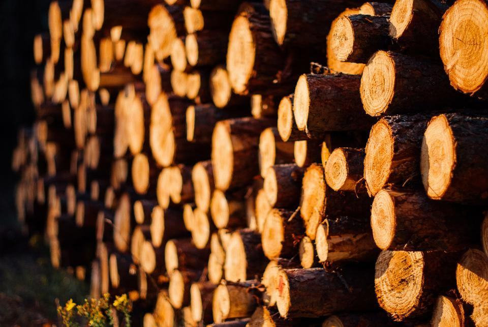

Om Ekdungen
Ekdungen grundades 1996 av Karin Ekwall, som då arbetade som parkarbetare i Linköpings kommun och började klättra i de grova ekarna längs Stångån på fritiden. I dag är vi sex anställda med bas på en gammal mjölkgård i Sturefors.
Vi förlänger livet på gamla ekar, lindar och alléträd – med såg, rep och mycket tålamod.
Ekdungen grundades 1996 av Karin Ekwall, som då arbetade som parkarbetare i Linköpings kommun och började klättra i de grova ekarna längs Stångån på fritiden. I dag är vi sex anställda med bas på en gammal mjölkgård i Sturefors.
Östergötland har några av Nordeuropas tätaste bestånd av jätteekar, och många står på privata gårdar. Vi arbetar efter Naturvårdsverkets åtgärdsprogram för särskilt skyddsvärda träd och tar hellre bort tio procent av kronan i omgångar än fäller ett träd som kan stå i hundra år till.

Trettio år i Östergötlands eklandskap
Ekdungen grundades 1996 av Karin Ekwall, som då arbetade som parkarbetare i Linköpings kommun och började klättra i de grova ekarna längs Stångån på fritiden. I dag är vi sex anställda med bas på en gammal mjölkgård i Sturefors.
Tips och nyheter
Vi har tolv lediga veckor mellan december och mars för ek och lind.

Cement och skum gör mer skada än nytta. Sara förklarar varför.

42 träd har fått en tioårsplan som församlingen kan budgetera efter.
Låt oss titta på ditt träd
Beskriv trädet och var det står, gärna med en bild, så ringer vi upp.
- Telefon
- 070-174 06 23
- E-post
- karin@ekdungen.se
- Öppettider
- Mån–fre 7–16, besiktning även lördagar
Kontakta oss
- Bas
- Gamla Mejerivägen 4
589 65 Sturefors - Telefon
- 070-174 06 23
- E-post
- karin@ekdungen.se
- Öppettider
- Mån–fre 7–16, besiktning även lördagar